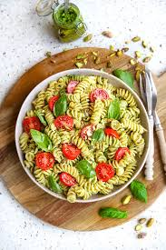

Home
Inleiding
Ingrediëntenlijst
bereiding
Tips
Feedback
Pasta pesto
van Tuur Steenssens
 Dit is een afbeelding van het recept. Meer recepten vind je op
njam!
Feedbackformulier
Persoonlijke gegevens
Naam:
E-mail:
Leeftijd:
geslacht:
Man
Vrouw
Ander
Feedback over het recept
Was het recept lekker?
Ja
Nee
Waardering:
Uitstekend
Goed
Redelijk
Matig
Slecht
Eventuele verbeteringen:
Voor wie heb je het gerecht gemaakt?
Verstuur
Formulier leegmaken